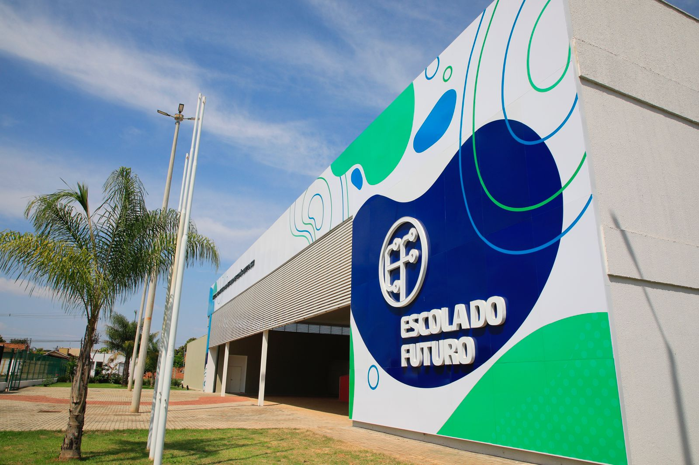

As Escolas do Futuro do Estado de Goiás (EFGs) são uma iniciativa de educação gratuita e de qualidade do Governo de Goiás para jovens do Ensino Médio, Superior e pessoas que procuram recolocação profissional ou querem empreender. As EFGs foram criadas pela lei nº 20.976/2021, com operacionalização da Universidade Federal de Goiás/Fundação de Apoio à Pesquisa (Funape), mediante convênio firmado entre o Governo de Goiás, por meio da Secretaria de Estado de Desenvolvimento e Inovação (SEDI) e UFG.
